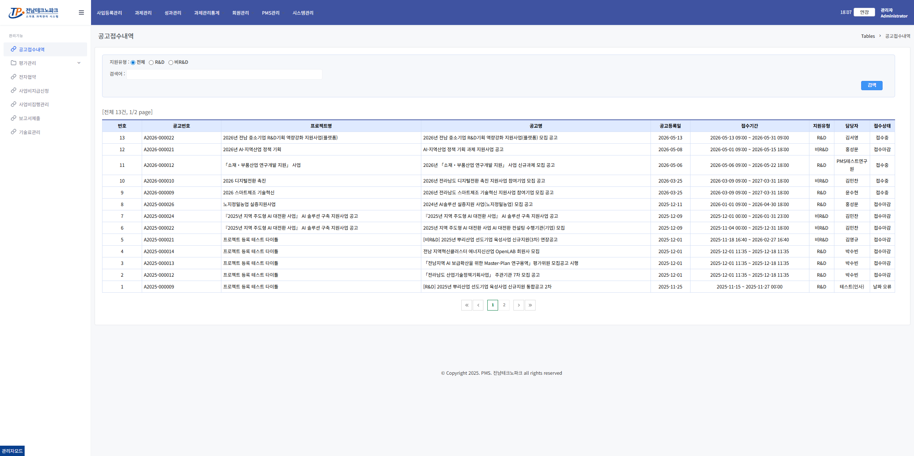
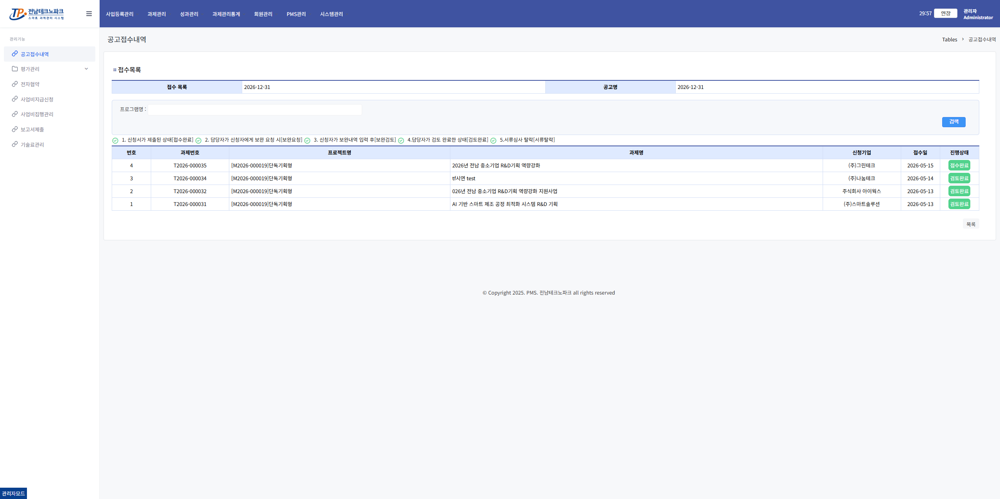
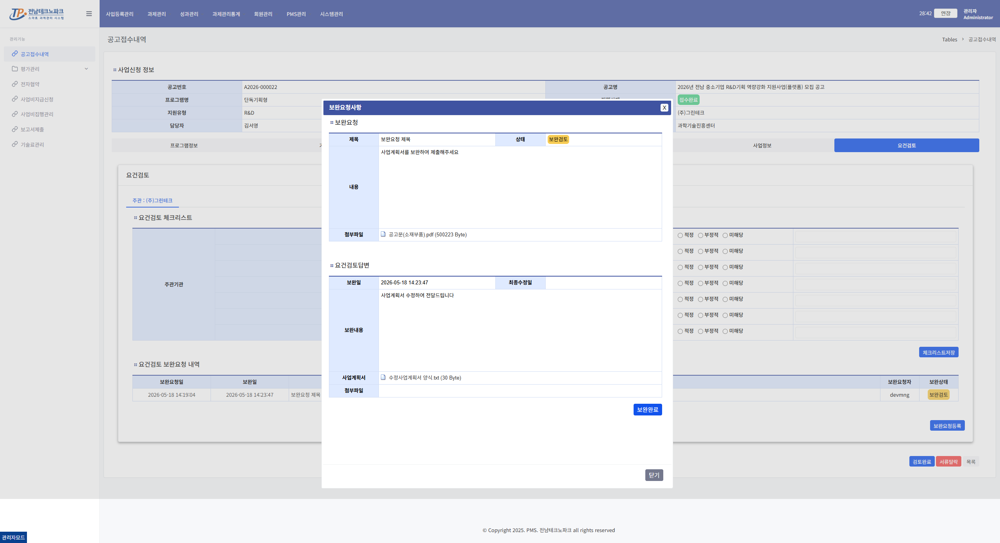
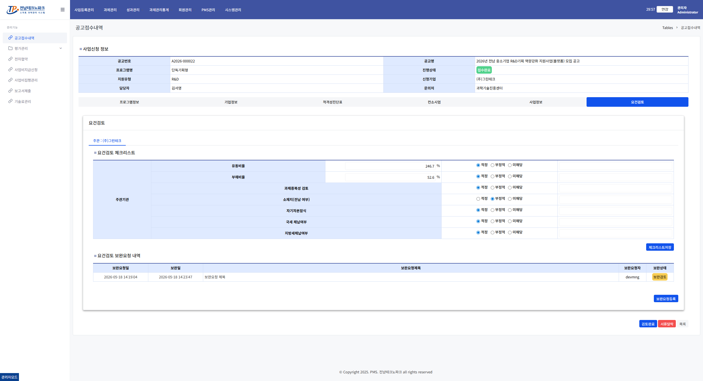

보완요청 답변 검토 관리자
1. 공고접수내역 목록 진입
왼쪽 메뉴 「과제관리」 → 「공고접수내역」 클릭

공고 행 클릭 → 접수목록에서 해당 신청서 행 클릭

2. 요건검토 탭 확인
접수 상세 화면에서 「요건검토」 탭 클릭 → 기업 보완 답변 제출 여부 확인

3. 보완요청 답변 확인
기업이 제출한 보완 답변 내용을 검토합니다.

4. 검토완료 또는 서류탈락 처리
검토 결과에 따라 「검토완료」 또는 「서류탈락」 버튼 클릭

⚠️ 주의사항
검토완료 처리 시 선정평가 단계로 진행됩니다.
서류탈락 처리 시 해당 신청은 최종 탈락 처리됩니다.